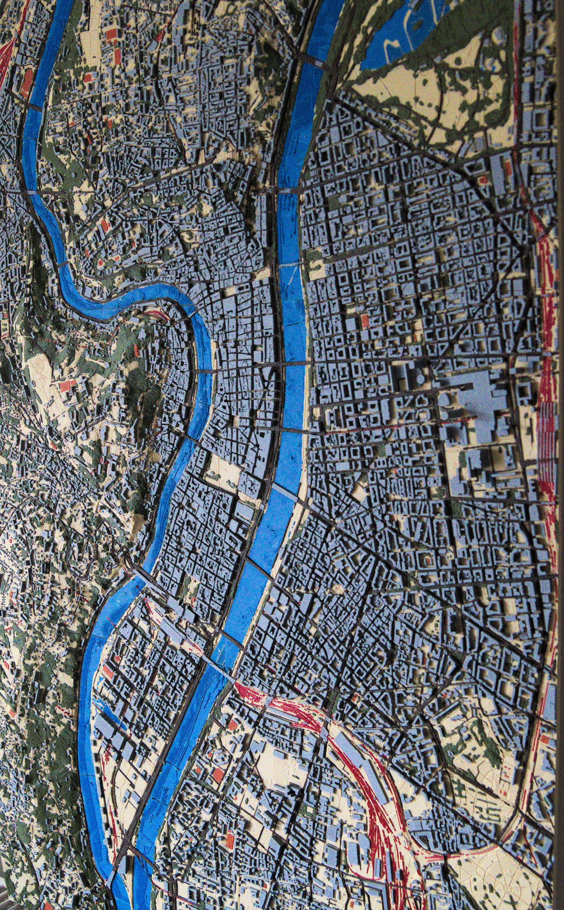
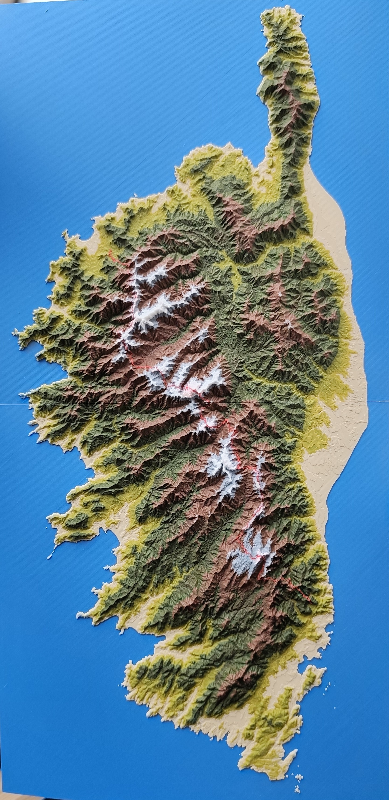
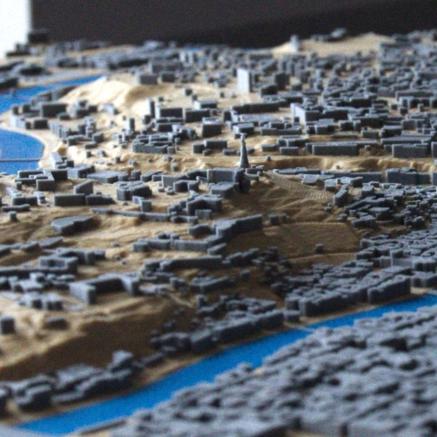
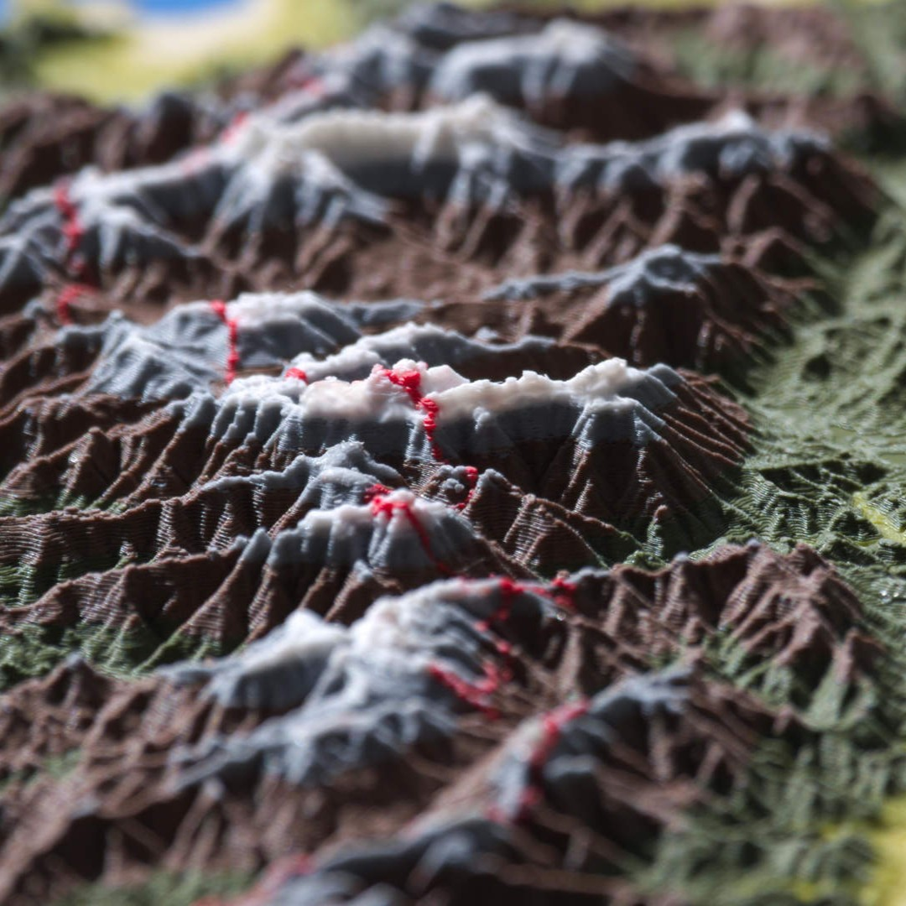
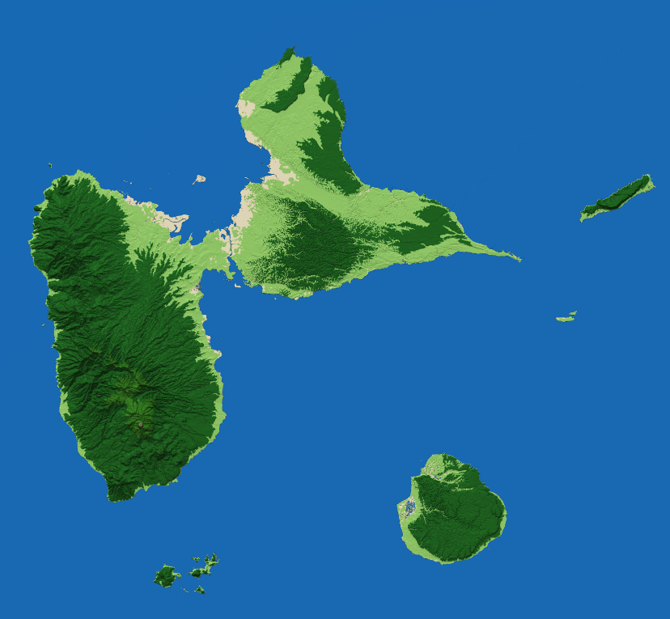

Création de cartes 3D
Passionné de cartographie, j'ai développé mon propre outil de génération de modèles du territoire français, optimisés pour l'impression 3D, dont voici un example de la ville de Lyon avec le moteur de rendu THREE.js.
Vous pouvez zoomer et faire tourner la carte avec votre souris. La carte peut mettre quelques secondes à charger avant de s'afficher.
L'outil de génération
Mon algorithme, écrit en PHP, transforme les données en OpenData fournies par l'Institut national de l'information géographique et forestière (IGN) pour génèrer des objets 3D au format STL, optimisés pour l'impression 3D et les moteurs de rendu.
Il se base sur les données d'altimétrie de la BD Alti et du RGE Alti, décrivant un maillage de la surface du sol jusqu'à 1M de résolution, et des données vectorielles de la BD Topo pour le sursol : bâtiments, routes, hydrographie, zones de végétation, et plus encore.
Ces dernières sont extraites grâce à PostGIS, extension du SGBD PostgreSQL, et de ses librairies GDAL et GEOS, qui activent la manipulation d'informations géographiques sous forme de géométries (points, lignes, polygones...).
L'outil est conçu pour être utilisé sur une application web, en cours de construction, pour permettre à chacun de créer ses propres cartes.
Quelques impressions 3D
Voici quelques cartes imprimées en 3D, et dont les modèles ont été générés avec mon outil :

Lyon imprimé en 3D avec 7 couleurs. Cette impression est issue du modèle présenté en haut de cette page.

Carte 3D du GR20 Corse. Ce modèle a remporté un prix dans un concours de design 3D sur le site MakerWorld.
Pour finir, voici le timelapse de l"impression de la carte de Lyon en 7 couleurs enregistrée par l'imprimante 3D :
Retrouvez toutes mes créations sur le site MakerWorld

Villes

Montagnes

Outre-mer